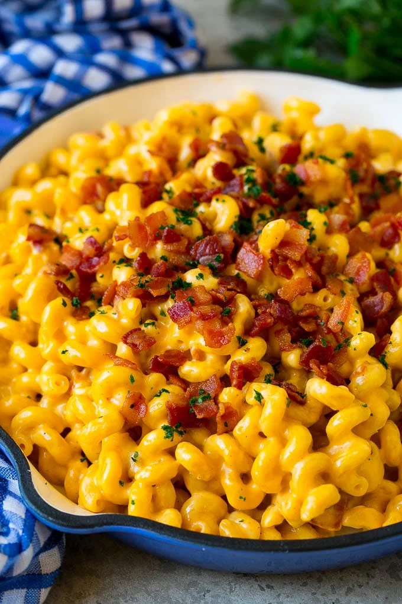

2.Mac 'n' Cheesee

Description
Macaroni and cheese—also called mac and cheese in the United States and macaroni cheese in the United Kingdom
—is a dish of cooked macaroni pasta and a cheese sauce, most commonly cheddar.
It can also incorporate other ingredients, such as breadcrumbs or meat.
Ingredients
Steps
- Boil the pasta, drain
- Make the cheese sauce by combining a fat (butter),
and starch (flour), then whisking in the milk products
- Cook the sauce until it's nice and thick
- Add in shredded cheeses, stir well
- Combine cheese sauce with cooked pasta